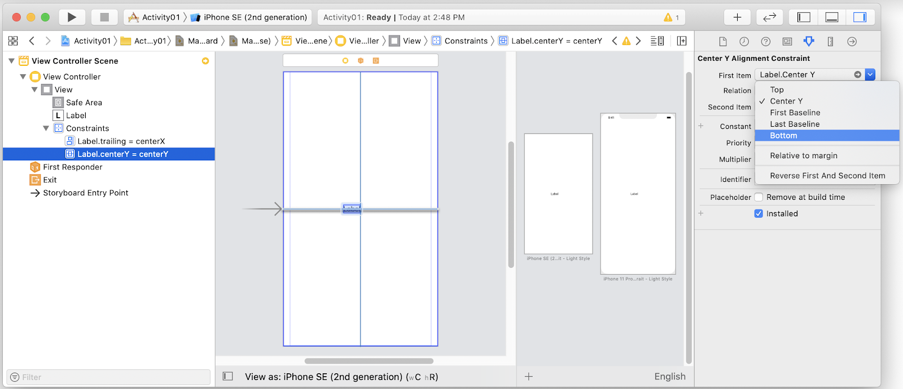
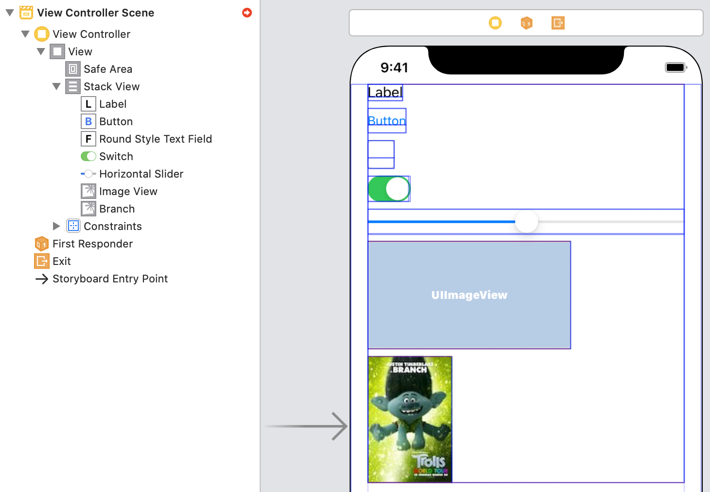

At the conclusion of this lesson, participants will be able to:
- Align two user interface objects using any combination of suitable attributes
- Manage the content-hugging and compression-resistance priorities for a series of views to fill up a space
- Use a scroll view to manage content for smaller screens and for keyboard management.
- Create self-sizing table view cells which dynamically adjust their height based on the content of the cell
- Use size classes to create adaptable interfaces across varying device types and orientations
What you'll need
- Mac running macOS (Mojave or Catalina)
- Xcode 11
Videos for the activities can be obtained from:
C349 Lesson05 Activity01 Center X and Center Y constraints
C349 Lesson05 Activity03 UIScrollView
C349 Lesson05 Activity04 UIScrollView keyboard management
C349 Lesson05 Activity05 Self-sizing table view cells
From the previous lesson, we have been able to use constraints to:
- align objects to the top, bottom, left and right of the safe area
- centrally align objects to the center x and center y of the safe area
It is also possible to align the top, bottom, left and right of objects to the center x and center y of the safe area. Activity01 shows how this can be done.
Watch the video Activity01 Center X and Center Y constraints and read the instructions below concurrently.
- Create project Activity01 using the Single View App template. Update the Organization Identifier with your studentid (e.g. sg.edu.rp.18184723)
- Change the simulator to iPhone 8 (or iPhone SE 2nd generation)
- Select Main.storyboard
In Main.storyboard:
- View as: iPhone 8 (or iPhone SE 2nd generation)
- Show the preview for an iPhone 8 and iPhone 11 Pro Max
- Add a label
- Select the label and use the Align tool to add constraints center horizontally in container and center vertically in container
- Select the constraint
Label.centerX = centerXand use the attributes inspector to changeLabel.centerXtoLabel.trailing
- Select the constraint
Label.centerY = centerYand use the attributes inspector to changeLabel.centerYtoLabel.bottom

- View the position of the label in Interface Builder and in the preview, note the constraints for the label are:
Label.trailing = centerXLabel.bottom = centerY
- Delete the constraint
Label.bottom = centerY - Create a constraint
Label.top = Safe Area.top + 20 - View the position of the label in Interface Builder and in the preview, note the constraints for the label are:
Label.trailing = centerXLabel.top = Safe Area.top + 20
Create a project Exercise01 with the following requirements:
- achieve the layout shown below
- use these image files in the project
|

Links
- https://developer.apple.com/library/archive/documentation/UserExperience/Conceptual/AutolayoutPG/AnatomyofaConstraint.html (section on Intrinsic Content Size onwards)
- https://medium.com/@dineshk1389/content-hugging-and-compression-resistance-in-ios-35a0e8f19118
- https://krakendev.io/blog/autolayout-magic-like-harry-potter-but-real
Google keywords search
- content hugging compression resistance
Intrinsic Content Size
Intrinsic content size is the natural size (height, width, or both) a view has based on the content of the view. The screenshot below shows some example views with their bounds rectangles visible:
- a label or button's intrinsic content size is based on the amount of text shown and the font used
- a text field and a switch has an intrinsic height and width
- a slider has an intrinsic height, but no intrinsic width
- an empty image view does not have an intrinsic content size, but as soon as an image is assigned, its intrinsic content size is set to the image's size

Some views (e.g. UIView) do not have an intrinsic content size, while for some other views (e.g. text views and image views) the intrinsic content size can vary.
Whenever possible, use the view's intrinsic content size in your layout. It lets your layout dynamically adapt as the view's content changes. It also reduces the number of constraints you need to create a non-ambiguous, non-conflicting layout, but you will need to manage the view's content-hugging and compression-resistance (CHCR) priorities.
Content Hugging and Compression Resistance (CHCR)
Auto Layout represents a view's intrinsic content size using a pair of constraints for each dimension (vertical and horizontal)
- the content hugging pulls the view inward so that it fits snugly around the content
- the compression resistance pushes the view outward so that it does not clip the content
Simplified Content-Hugging and Compression-Resistance constraint equations
// Content Hugging
View.width <= IntrinsicWidth
View.height <= IntrinsicHeight
// Compression Resistance
View.width >= IntrinsicWidth
View.height >= IntrinsicHeightEach of these constraints can have its own priority. By default, views have
- a 250 priority for their content hugging
- a 750 priority for their compression resistance
Therefore, it's easier to stretch a view than it is to shrink it. For most controls, this is the desired behavior. For example, you can safely stretch a button larger than its intrinsic content size; however, if you shrink it, its content may become clipped.
Watch the video Activity02 CHCR and read the instructions below concurrently.
- Create project Activity02 using the Single View App template. Update the Organization Identifier with your studentid (e.g. sg.edu.rp.18184723)
- Change the simulator to iPhone 8 (or iPhone SE 2nd generation)
- Select Main.storyboard
In Main.storyboard:
- View as: iPhone 8 (or iPhone SE 2nd generation)
- Show the preview for an iPhone 8 (or iPhone SE 2nd generation)
- With reference to the screenshot above:
- add 2 labels and rename as oLabel (text is Name, background color is Orange) and gLabel (text is John Tan, background color is Green) in the document outline
- add the following constraints
- View the autolayout error:
- View the Content Hugging Priority (CH) and Content Compression Resistance Priority (CR) for the labels via the Size Inspector, the values should be:
- Set oLabel CH to 252. oLabel CH is greater than gLabel CH, so oLabel fits snugly while gLabel expands.

- Set oLabel CH to 250. gLabel CH is greater than oLabel CH, so gLabel fits snugly while oLabel expands.
- Change oLabel text to The quick brown fox jumps over the
- Add a preview for iPhone 11 Pro Max
- Set oLabel CR to 751. oLabel CR is greater than gLabel CR, so oLabel is not clipped.
- Set oLabel CR to 749. gLabel CR is greater than oLabel CR, so gLabel is not clipped.
Links
- https://developer.apple.com/library/archive/documentation/UserExperience/Conceptual/AutolayoutPG/WorkingwithScrollViews.html
- https://useyourloaf.com/blog/scroll-view-layouts-with-interface-builder/
- https://fluffy.es/move-view-when-keyboard-is-shown/
Google keywords search
- iOS uiscrollview autolayout
UIScrollView for smaller screens
By embedding a view (e.g. UIView or UIStackView) in a UIScrollView, the user is able to scroll to view user interface objects (which are in the embedded view) which may not fit in one screen on iOS devices with smaller screens. See Activity03.
The steps involved are:
- Constrain the scroll view to the Safe Area (leading, top, trailing, bottom)
- Constrain the embedded view to the Content Layout Guide of the scroll view (leading, top, trailing, bottom)
- Constrain the embedded view width and Frame Layout Guide width of the scroll view to be equal
UIScrollView for keyboard management
A scroll view can also be used to push the content upwards if a keyboard blocks a text field which is being edited. See Activity04.
The steps involved are:
- Create an IBOutlet for the scroll view called
scrollView - Add the code to the viewDidLoad method to receive notifications when the keyboard shows and the keyboard hides
override func viewDidLoad() {
super.viewDidLoad()
// code to receive notifications when the keyboard shows and the keyboard hides
NotificationCenter.default.addObserver(self, selector: #selector(ViewController.keyboardWillShow), name: UIResponder.keyboardWillShowNotification, object: nil)
NotificationCenter.default.addObserver(self, selector: #selector(ViewController.keyboardWillHide), name: UIResponder.keyboardWillHideNotification, object: nil)
}- Add the methods to be executed when the keyboard shows and the keyboard hides
// called when keyboard show notification is received
@objc func keyboardWillShow(notification: NSNotification) {
if let keyboardSize = (notification.userInfo?[UIResponder.keyboardFrameEndUserInfoKey] as? NSValue)?.cgRectValue {
// create a keyboard high inset to push the scroll view up
let contentInsets = UIEdgeInsets(top: 0.0, left: 0.0, bottom: keyboardSize.height , right: 0.0)
scrollView.contentInset = contentInsets
scrollView.scrollIndicatorInsets = contentInsets
}
}
// called when keyboard hide notification is received
@objc func keyboardWillHide(notification: NSNotification) {
// create an empty inset to push the scroll view down
let contentInsets = UIEdgeInsets(top: 0.0, left: 0.0, bottom: 0.0, right: 0.0)
scrollView.contentInset = contentInsets
scrollView.scrollIndicatorInsets = contentInsets
}Watch the video Activity03 UIScrollView and read the instructions below concurrently.
- Create project Activity03 using the Single View App template. Update the Organization Identifier with your studentid (e.g. sg.edu.rp.18184723)
- Select Main.storyboard
In Main.storyboard:
- View as: iPhone 11
- Rename the root view to rootView
- Add a scroll view, resize the scroll view to fit within the Safe Area and left layout guide. Right-click-drag from the Scroll View to Safe Area. Press SHIFT on the keyboard, and click the constraints shown below. Click anywhere outside the dialog box when done.
- Leading Space to Safe Area
- Top Space to Safe Area
- Trailing Space to Safe Area
- Bottom Space to Safe Area
- Add a UIView to the scroll view, resize the view to fit the scroll view. Right-click-drag from the embedded view to the Content Layout Guide of the scroll view. Press SHIFT on the keyboard, and click the constraints shown below. Click anywhere outside the dialog box when done.
- Leading Space to Content Layout Guide
- Top Space to Content Layout Guide
- Trailing Space to Content Layout Guide
- Bottom Space to Content Layout Guide
- Change the constant to 0 for
- View.trailing = Content Layout Guide.trailing
- View.bottom = Content Layout Guide.bottom
- Right-click drag from Frame Layout Guide of the scroll view to the embedded view. Press SHIFT on the keyboard, and click the constraints shown below. Click anywhere outside the dialog box when done.
- Equal Widths
- Equal Height (only needed for this demonstration)
- Select Frame Layout Guide.height = View.height and change the priority to 250 (only needed for this demonstration)
- Add a label to the top left hand corner of the view, set the text as Top Label, use the Add New Constraints tool to add constraints top 8 and left 8
- Add a label to the bottom left hand corner of the view, set the text as Bottom Label, use the Add New Constraints tool to add constraints bottom 8, left 8 and top 760. The top constraint is to force the distance between Top Label and Bottom Label; in practice, this would not be necessary if you have properly constrained user interface objects laid out from the top of the view to the bottom of the view.
- Run the project in an iPhone 11. Both labels are visible.
- Run the project in an iPhone 8. Top Label is visible. Scrolling down reveals Bottom Label.
Watch the video Activity04 UIScrollView keyboard management and read the instructions below concurrently.
- Start from the project given in Activity04.zip
- Run the project in an iPhone 11. Click on the first text field and notice that the keyboard hides the text field.
- Select Main.storyboard
In Main.storyboard:
- The constraints for the scroll view and the stack view have been set up. The code for tracking the active keyboard and dismissing the keyboard with the Done button are already included (refer to C348 codelabs 06-ios-uibutton-uitextfield-protocol-delegate Activity06)
- Create an IBOutlet property for the scroll view as scrollView
- Update ViewController with the code shown below
import UIKit
class ViewController: UIViewController, UITextFieldDelegate {
// property to track the last edited text field
var activeTextField : UITextField? = nil
@IBOutlet weak var scrollView: UIScrollView!
@IBOutlet weak var outTextField1: UITextField!
@IBOutlet weak var outTextField2: UITextField!
@IBOutlet weak var outTextField3: UITextField!
@IBOutlet weak var outTextField4: UITextField!
override func viewDidLoad() {
super.viewDidLoad()
outTextField1.delegate = self
outTextField2.delegate = self
outTextField3.delegate = self
outTextField4.delegate = self
NotificationCenter.default.addObserver(self, selector: #selector(ViewController.keyboardWillShow), name: UIResponder.keyboardWillShowNotification, object: nil)
NotificationCenter.default.addObserver(self, selector: #selector(ViewController.keyboardWillHide), name: UIResponder.keyboardWillHideNotification, object: nil)
}
// called when the text field identified by textField starts being edited
func textFieldDidBeginEditing(_ textField: UITextField) {
// track the currently edited text field
self.activeTextField = textField
}
// called when the text field identified by textField stops being edited
func textFieldDidEndEditing(_ textField: UITextField) {
// reset the property
self.activeTextField = nil
}
@IBAction func actDone(_ sender: UIBarButtonItem) {
if let activeTextField = activeTextField {
activeTextField.resignFirstResponder()
}
}
// called when keyboard show notification is received
@objc func keyboardWillShow(notification: NSNotification) {
if let keyboardSize = (notification.userInfo?[UIResponder.keyboardFrameEndUserInfoKey] as? NSValue)?.cgRectValue {
// create a keyboard high inset to push the scroll view up
let contentInsets = UIEdgeInsets(top: 0.0, left: 0.0, bottom: keyboardSize.height , right: 0.0)
scrollView.contentInset = contentInsets
scrollView.scrollIndicatorInsets = contentInsets
}
}
// called when keyboard hide notification is received
@objc func keyboardWillHide(notification: NSNotification) {
// create an empty inset to push the scroll view down
let contentInsets = UIEdgeInsets(top: 0.0, left: 0.0, bottom: 0.0, right: 0.0)
scrollView.contentInset = contentInsets
scrollView.scrollIndicatorInsets = contentInsets
}
}- Run the project in an iPhone 11. Click on any of the text fields. When the keyboard appears, the view scrolls so that the text field will not be hidden. Verify it works on an iPhone 8 as well.
Links
- https://developer.apple.com/library/archive/documentation/UserExperience/Conceptual/AutolayoutPG/WorkingwithSelf-SizingTableViewCells.html
- https://www.raywenderlich.com/8549-self-sizing-table-view-cells
Google keywords search
- ios self-sizing table view cells
Self-sizing table view cells
Auto Layout can be used to dynamically determine the height of a table view cell
- Provide constraints for the label to fully describe the position of the label within the cell (the bottom constraint for the label might need to use a greater than or equal relationship)
- Set the number of lines for the label to 0
Watch the video Activity05 Self-sizing table view cells and read the instructions below concurrently.
- Create project Activity05 using the Single View App template. Update the Organization Identifier with your studentid (e.g. sg.edu.rp.18184723)
- Change the simulator to iPhone 8 (or iPhone SE 2nd generation)
- Set up the project as shown in the video. The text and image used in the project are given below
Ariana Grande-Butera is an American singer, songwriter, and actress. Born in Boca Raton, Florida, Grande began her career in the 2008 Broadway musical 13. She rose to promimence for her role as Cat Valentine in the Nickelodeon television series Victorious (2010–2013) and its spin-off Sam & Cat (2013–2014). After she grew interested in pursuing a music career, Grande recorded songs for the soundtrack of Victorious, and signed with Republic Records in 2011 after the label's executives discovered videos of her covering songs that she uploaded onto YouTube.
- For the first portion of the demonstration, note that outDetailLabel has constraints (leading 0, top 0, trailing 0, bottom 0) and the value for Lines is 0.
- For the second portion of the demonstration, note that the bottom constraint for outDetailLabel has a greater than or equal relationship.
Copy project Activity05 to a new folder called Exercise02. For project Exercise02:
- Modify or add constraints where necessary so that there is some space under the image view (similar to the space above the image view) as shown in the screenshot below
- Post your idea in the Microsoft Teams group chat and discuss the pros and cons of each team members idea.
Links
- https://developer.apple.com/library/archive/documentation/UserExperience/Conceptual/AutolayoutPG/Size-ClassSpecificLayout.html
- https://developer.apple.com/design/human-interface-guidelines/ios/visual-design/adaptivity-and-layout/
- https://useyourloaf.com/blog/size-classes/
- https://ryanbritton.com/2016/02/unique-layouts-for-iphone-and-ipad-with-size-classes/
Google keywords search
- ios size classes
Size classes
Size classes categorizes devices based on device type and device orientation.
It considers the width (compact or regular) and height (compact or regular). This results in 4 different concrete combinations known as Final Class Sizes.
Final size classes
The Final classes represent actual size classes displayed on devices.
Size class | Width | Height | Device |
wC hC | Compact | Compact | iPhone (except Plus) in landscape |
wC hR | Compact | Regular | iPhone in portrait |
wR hC | Regular | Compact | iPhone Plus in landscape |
wR hR | Regular | Regular | iPad in portrait and landscape |
Base size classes
These are abstract size classes that represent a combination of two or more Final Size Classes. For example, something which applies to the wAny hC base size class applies to the wC hC and wR hC final size classes.
Base size class | Final size classes included | |
wAny hC | wC hC wR hC | |
wAny hR | wC hR wR hR | |
wC hAny | wC hC wC hR | |
wR hAny | wR hC wR hR | |
wAny hAny | wC hC wC hR wR hC wR hR | |
Storyboards in Interface Builder use size classes. By default, the size class in Main.storyboard is wAny hAny.
Customizations
A customization modifies a user interface element depending on the size class. There are two types of customizations:
- customizations for the value of selected attributes; for example, there could be a customization to set the font color of a label to red in wC hR (iPhone in portrait) and green in wR hC (iPhone in landscape)
- customizations to install or uninstall a view or a constraint; for example, a customization to add a view to the view hierarchy in wC hR but not in wR hC
Working with customizations
Anything set in a more specific size class always overrides the more general size classes. For example, a customization for wC hAny would override a customization for wAny hAny, and a customization for wC hC would override a customization for wC hAny.
Therefore, it is typically easiest to work from the most general size class to the most specific. Select the default layout for your app, and design this layout in the wAny hAny size class. Then add customizations for the other Base or Final size classes as needed.
Watch the video Activity06 Size classes (1) and read the instructions below concurrently.
- Create project Activity06 using the Single View App template. Update the Organization Identifier with your studentid (e.g. sg.edu.rp.18184723)
- Change the simulator to iPhone 8 (or iPhone SE 2nd generation)
- Select Main.storyboard
In Main.storyboard:
- View as: iPhone 11
- Show the preview for an iPhone 8 (or iPhone SE 2nd generation) in portrait and landscape, iPhone 8 Plus in landscape and iPad 9.7 inch
- Add a label to the top left hand corner of the view
- Select the label, in the attributes inspector, add a customization for wC hR by clicking on the + button as illustrated in the screenshot below; in the dialog, select Compact for Width and Regular for Height, click Add Variation
- Add customizations for wC hC, wR hC and wR hR.
- Uncheck for wC hC, the label does not appear in iPhone landscape.
- Uncheck for wR hC, the label does not appear in iPhone Plus landscape.
- Uncheck for wC hR, the label does not appear in iPhone portrait.
- Uncheck for wC hR, the label does not appear in iPad.
- For the label, add constraints top 0 and leading 20.
- Select
Label.leading = Safe Area.leading + 20and add a customization for wR hR. Uninstall the customization for wR hR. - For the label, add a constraint to center horizontally in container.
- Select Label.centerX = centerX and add a customization for wR hR. Uninstall the constraint for wAny hAny.
- From the preview, verify that for iPhone portrait and landscape, and iPhone Plus landscape the label is constrained to the top left hand corner; for iPad, the label is constrained to the top and centered horizontally
- Select the label, in the attributes inspector, for the Color, add a wR hR and wR hC customization; for the wR hR customization, select red, and for the wR hC customization, select orange
- From the preview, verify that for iPhone Plus landscape the label is orange; for iPad, the label is red
Watch the video Activity07 Size classes (2) and read the instructions below concurrently.
- Create project Activity07 using the Single View App template. Update the Organization Identifier with your studentid (e.g. sg.edu.rp.18184723)
- Change the simulator to iPhone 8 (or iPhone SE 2nd generation)
- Select Main.storyboard
In Main.storyboard:
- View as: iPhone 8 (or iPhone SE 2nd generation)
- Show the preview for an iPhone 8 (or iPhone SE 2nd generation) in portrait and landscape, iPhone 8 Plus in landscape and iPad 9.7 inch
- Add an image to Assets.xcassets
- Add an image view to the view
- For the image view, add constraints top 20, leading 16, trailing 16 and aspect ratio 1
- Switch to the landscape orientation, at the View as: section, you should see wC hC.
- Click on Vary for Traits, in the dialog box check the checkbox next to Height, and click anywhere outside the dialog box. This will introduce variations for wAny hC. The reason for this is that we were previously in wC hC mode, and we only want variations based on the Height, which means we don't care about the width (the width can be Anything); hence we will be introducing variations for wAny hC.
- For the following constraints, add wAny hC customizations and uninstall those customizations
- Safe Area.trailing = Image View.trailing + 16
- Image View.top = Safe Area.top + 20
- Image View.leading = Safe Area.leading + 16
- Resize the image view to become a square from the top left hand corner guides to the bottom guide
- For the image view, add constraints top 20, leading 16, bottom 20
- Click on Done Varying
- Verify that the image view appears in the upper half on iPhone portrait and iPad, and on the left side for iPhone landscape and iPhone Plus landscape
- UIImagePicker
Reference docs
- https://developer.apple.com/library/archive/documentation/UserExperience/Conceptual/AutolayoutPG/index.html
- https://developer.apple.com/design/human-interface-guidelines/ios/visual-design/adaptivity-and-layout/
- https://developer.apple.com/library/archive/documentation/UserExperience/Conceptual/AutolayoutPG/AnatomyofaConstraint.html
- https://medium.com/@dineshk1389/content-hugging-and-compression-resistance-in-ios-35a0e8f19118
- https://krakendev.io/blog/autolayout-magic-like-harry-potter-but-real
- https://developer.apple.com/library/archive/documentation/UserExperience/Conceptual/AutolayoutPG/WorkingwithScrollViews.html
- https://useyourloaf.com/blog/scroll-view-layouts-with-interface-builder/
- https://fluffy.es/move-view-when-keyboard-is-shown/
- https://developer.apple.com/library/archive/documentation/UserExperience/Conceptual/AutolayoutPG/WorkingwithSelf-SizingTableViewCells.html
- https://www.raywenderlich.com/8549-self-sizing-table-view-cells
- https://developer.apple.com/library/archive/documentation/UserExperience/Conceptual/AutolayoutPG/Size-ClassSpecificLayout.html
- https://developer.apple.com/design/human-interface-guidelines/ios/visual-design/adaptivity-and-layout/
- https://useyourloaf.com/blog/size-classes/
- https://ryanbritton.com/2016/02/unique-layouts-for-iphone-and-ipad-with-size-classes/